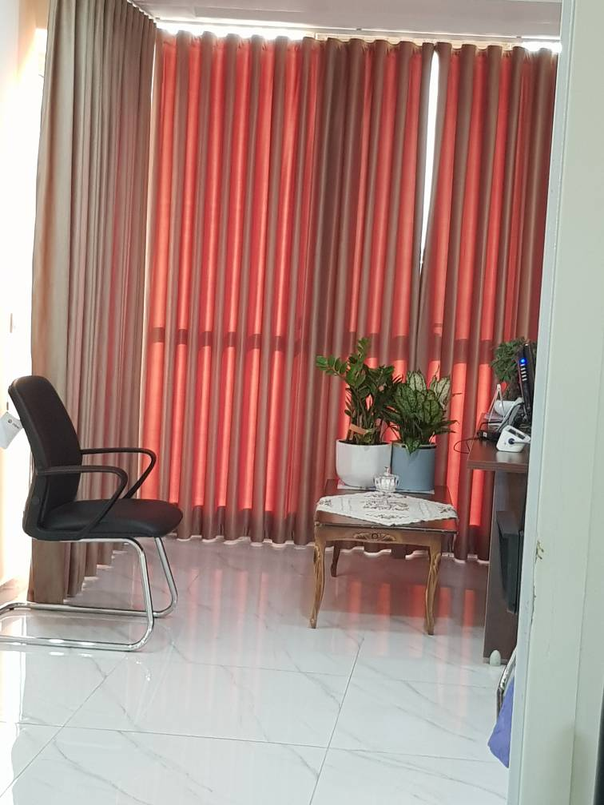
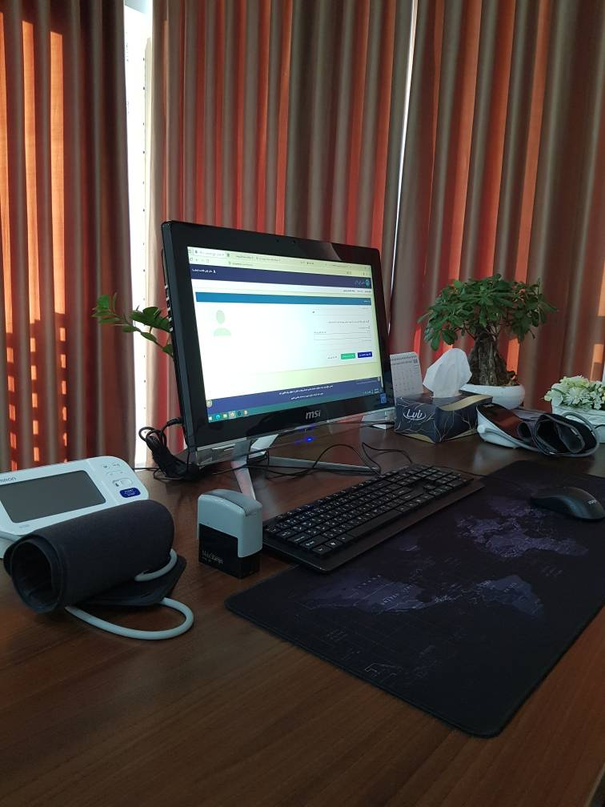
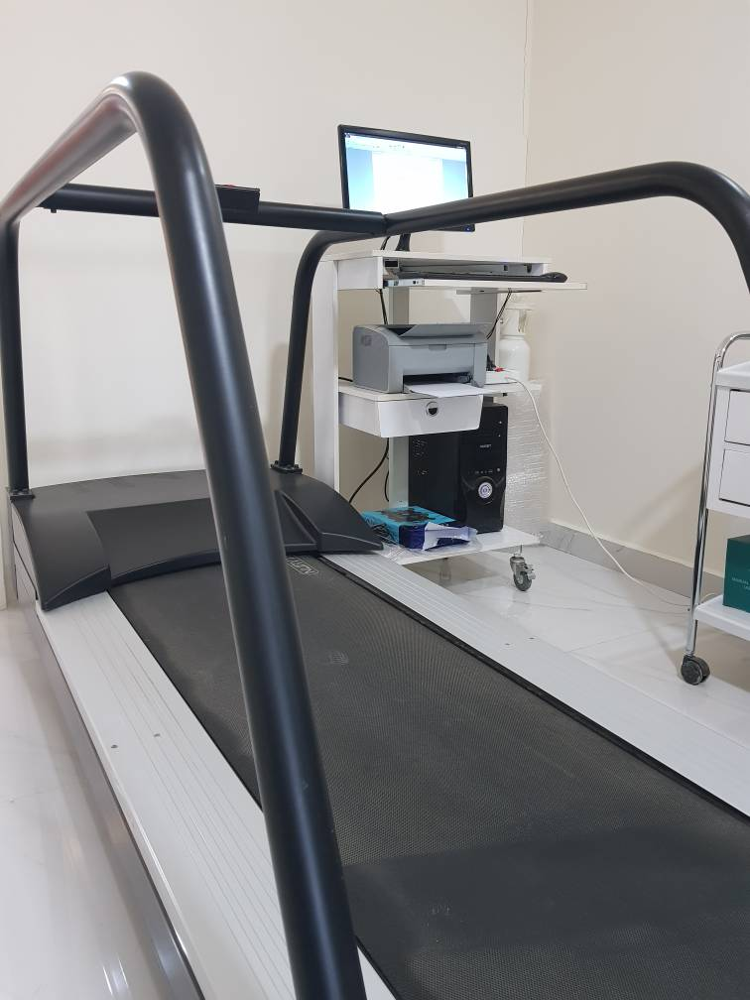

فضای مطب
گالری تصاویر





فوق تخصص اینترونشنال کاردیولوژی
با بیش از ۱۵ سال تجربه در تشخیص و درمان بیماریهای قلب و عروق، ارائه بهترین مراقبتهای پزشکی به بیماران در ارومیه
آشنایی با پزشک
دکتر آرش فلاحت، فارغالتحصیل دورههای تخصصی و فلوشیپ از دانشگاه علوم پزشکی تهران، با بیش از ۱۵ سال سابقه درمان بیماریهای قلبی و عروقی، یکی از متخصصان مجرب استان آذربایجان غربی است.
تخصص ایشان در حوزه اینترونشنال کاردیولوژی (فوق تخصص مداخلات قلبی) شامل انجام آنژیوپلاستی، آنژیوگرافی، اکوکاردیوگرافی و سایر روشهای تشخیصی و درمانی پیشرفته میباشد.
آنچه ارائه میدهیم
طیف کاملی از خدمات تشخیصی و درمانی قلب و عروق در مطب و مراکز درمانی معتبر ارومیه
تصویربرداری دقیق از قلب با استفاده از امواج صوتی برای ارزیابی ساختار و عملکرد قلب
در مطبارزیابی عملکرد قلب در شرایط فعالیت فیزیکی برای تشخیص بیماریهای عروق کرونر
در مطبثبت فعالیت الکتریکی قلب برای تشخیص آریتمی، انفارکتوس و سایر اختلالات قلبی
در مطبتصویربرداری از عروق کرونر قلب با استفاده از ماده حاجب جهت تشخیص انسداد رگها
در بیمارستانباز کردن عروق مسدود قلبی با استفاده از بالون و استنت، بدون نیاز به جراحی باز
در بیمارستانتشخیص، پایش و درمان فشار خون بالا برای پیشگیری از عوارض قلبی و عروقی
در مطبپوشش بیمه
پذیرش بیمه تأمین اجتماعی و بیمه درمان تکمیلی وابسته
پذیرش بیمه درمانی نیروهای مسلح (ارتش، سپاه، ناجا)
پذیرش بیمه پایه سلامت ایران (صندوقهای کارکنان دولت، روستاییان، همگانی و سایر اقشار)
پذیرش بیمه درمان تکمیلی شرکت بیمه ملت
پذیرش بیمه درمان تکمیلی شرکت سهامی بیمه ایران
پذیرش اکثر بیمههای درمانی پایه و تکمیلی معتبر کشور
برای اطمینان از پذیرش بیمه خود، پیش از مراجعه با مطب تماس بگیرید.
فضای مطب



رزرو وقت
برای رزرو وقت ویزیت، یکی از سایتهای زیر را انتخاب کنید:
برای موارد اورژانسی قلبی با اورژانس ۱۱۵ تماس بگیرید.
ارتباط با ما
ارومیه، خیابان حسنی، روبروی بانک سپه
ساختمان وستا، طبقه ۱۰
شنبه تا چهارشنبه
ساعت ۱۶:۰۰ تا ۲۱:۰۰